Close [X]
This bespoke 24-day journey explores the soul of Thailand, Laos, Vietnam, and Cambodia. From Bangkok’s energy and Luang Prabang’s serenity to Vietnam’s imperial history and the wonders of Angkor, you will experience a perfect blend of deep cultural immersion and unparalleled luxury.
Route: Bangkok → Chaing Mai → Luang Prabang → Hanoi → Hue → Hoi An → Ho Chi Minh → Siem Reap → Phnom Penh

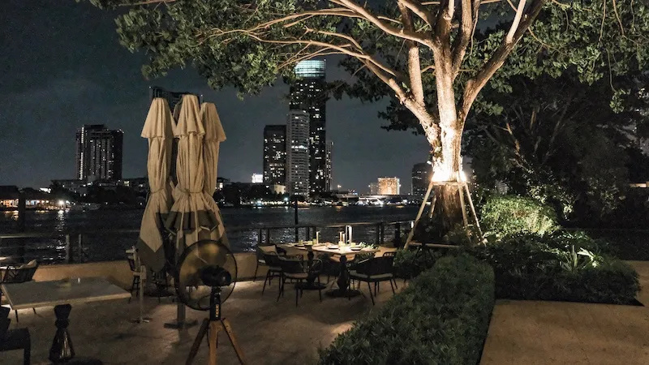
LOCATION Bangkok
ACTIVITIES Your grand cultural adventure begins as you touch down at Suvarnabhumi Airport (BKK). A private luxury transfer will be waiting to whisk you directly to Capella Bangkok, your opulent sanctuary nestled gracefully along the Chao Phraya River. Upon arrival, take a moment to absorb the stunning river views from your suite. Spend the afternoon settling into your lavish surroundings, perhaps enjoying a refreshing dip in the infinity pool overlooking the river or indulging in a leisurely afternoon tea, a delightful start to your journey. As evening descends, savor a sophisticated welcome dinner at Phra Nakhon, Capella's exquisite riverside Thai restaurant, or for a world-class culinary experience, opt for Côte by Mauro Colagreco, enjoying its Michelin-starred French Riviera-inspired cuisine.
ACCOMMODATION Capella Bangkok


LOCATION Bangkok
ACTIVITIES Today is dedicated to the glittering heart of Bangkok's rich heritage. With your private, expert guide, you'll embark on a journey through the city's most iconic spiritual and historical landmarks. First, explore the magnificent Grand Palace, a vast complex of intricate buildings that served as the official residence of the Kings of Siam. Within its walls, discover the sacred Wat Phra Kaew, home to the revered Emerald Buddha. Continue to the serene Wat Pho, where the colossal Reclining Buddha captivates with its sheer scale and intricate craftsmanship. Enjoy a delectable traditional Thai lunch at a curated local restaurant, offering authentic flavors. In the afternoon, experience the timeless charm of Bangkok with a private long-tail boat tour along the city's intricate Klongs (canals), observing traditional stilt houses and vibrant local life that thrives along the waterways. Conclude your day with a visit to Wat Arun (Temple of Dawn), an iconic landmark whose glittering spires are best admired as the sun begins to set, casting golden hues over the river. For dinner, indulge in exquisite refined Thai cuisine at Issaya Siamese Club, set in a beautifully restored colonial villa surrounded by lush gardens, offering an elegant and memorable dining experience.
ACCOMMODATION Capella Bangkok

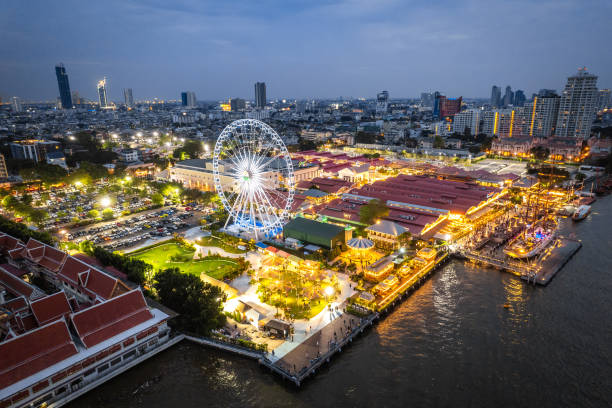
LOCATION Bangkok
ACTIVITIES Venture north on a full-day private excursion to Ayutthaya, a UNESCO World Heritage Site and the glorious former capital of Siam. Your knowledgeable guide will bring history to life at Wat Mahathat and Wat Chaiwatthanaram. Enjoy a gourmet lunch at a charming riverside restaurant before returning to Capella Bangkok. The evening is at your leisure to enjoy the Auriga Wellness spa or explore the local night markets.
ACCOMMODATION Capella Bangkok


LOCATION Chaing Mai
ACTIVITIES This morning offers a glimpse into Thai artistic heritage with a visit to the Jim Thompson House, a beautifully preserved traditional Thai house complex. This fascinating museum provides insight into Thai architecture, art collections, and the intriguing story of its American founder, Jim Thompson, who revitalized the Thai silk industry. Enjoy some leisure time for last-minute souvenir shopping at curated boutiques or simply relax at the hotel. After lunch, your private transfer will take you to Suvarnabhumi Airport (BKK) for your luxury domestic flight to Chiang Mai (CNX), the charming capital of Northern Thailand. Upon arrival, transfer to Raya Heritage, a serene resort that beautifully encapsulates Lanna cultural design. Settle into your spacious suite and enjoy dinner at the hotel's Khu Khao restaurant, perhaps accompanied by a performance of traditional Northern Thai music.
ACCOMMODATION Raya Heritage

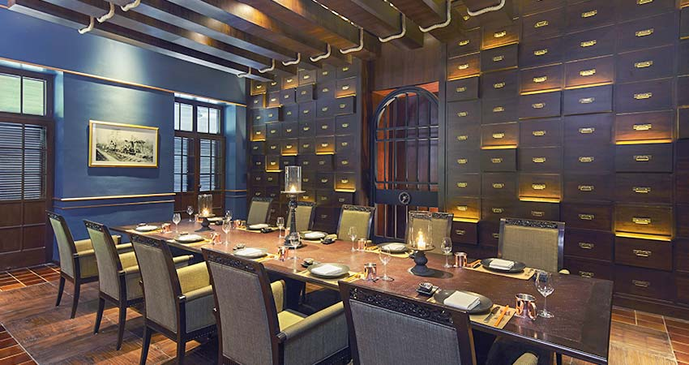
LOCATION Chaing Mai
ACTIVITIES Explore the rich Lanna culture of Northern Thailand with your private guide. Begin with a visit to Wat Phra That Doi Suthep, a sacred temple nestled high in the mountains, offering not only spiritual reverence but also breathtaking panoramic views of Chiang Mai city below. Descend to explore the temples within Chiang Mai's old city, such as Wat Phra Singh with its exquisite Lion Buddha and the imposing Wat Chedi Luang, admiring their unique Lanna architectural styles and intricate decorations. Enjoy an authentic Northern Thai lunch, savoring regional specialties. In the afternoon, you'll gain insight into local craftsmanship with a visit to a traditional craft village, observing the delicate art of silk weaving or the vibrant process of umbrella painting, providing a deeper appreciation for the local heritage. For dinner, enjoy refined Northern Thai cuisine in an elegant colonial setting at The Service 1921 Restaurant & Bar, located at the Anantara Chiang Mai Resort.
ACCOMMODATION Raya Heritage
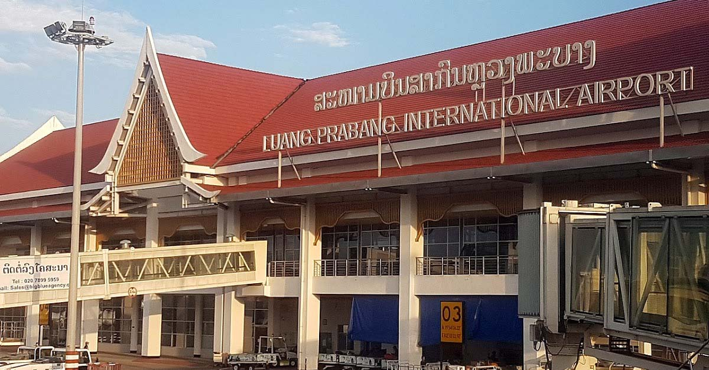

LOCATION Luang Prabang
ACTIVITIES Savor a leisurely breakfast at Raya Heritage, taking advantage of its serene riverside setting. You might opt for an optional morning activity, such as a peaceful yoga session by the river or a gentle stroll through the hotel's lush gardens. Depending on your flight schedule, there may be time for some last-minute artisan shopping at local galleries for unique handcrafted souvenirs. Your private transfer will then take you to Chiang Mai International Airport (CNX) for your luxury flight to Luang Prabang International Airport (LPQ), Laos. Upon arrival, you will be warmly met and transferred to the exquisite Amantaka, a serene oasis perfectly reflecting Luang Prabang's tranquil charm. Settle into your luxurious pavilion and embrace the peaceful ambiance of this UNESCO World Heritage town. Dinner will be a refined experience at Amantaka's Dining Room, or you may choose a charming local restaurant by the Mekong River to sample authentic Lao cuisine.
ACCOMMODATION Amantaka


LOCATIONLuang Prabang
ACTIVITIES Begin your day before dawn for a truly profound cultural experience: witnessing the sacred Alms Giving Ceremony. As saffron-robed monks emerge from their monasteries, locals reverently offer sticky rice, a beautiful act of faith and a timeless tradition (Amantaka can often arrange this with utmost respect). Return to your hotel for a peaceful breakfast. Afterwards, embark on a private tour of Luang Prabang, a town steeped in history and spirituality. Visit the former Royal Palace Museum, offering insights into Laos's monarchy. Explore Wat Xieng Thong (the Golden City Temple), a masterpiece of Lao temple architecture, and the charming Wat Mai. Enjoy lunch at a curated local restaurant offering traditional Lao cuisine. In the afternoon, ascend Mount Phousi for breathtaking panoramic sunset views over the city and the confluence of the Mekong and Nam Khan rivers, followed by an exploration of the vibrant Night Market, known for its ethical handicrafts.
ACCOMMODATION Amantaka

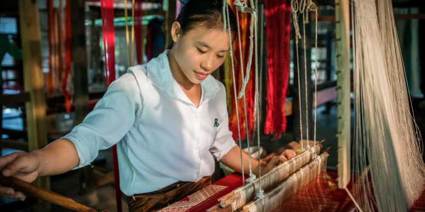
LOCATIONLuang Prabang
ACTIVITIESThis morning, immerse yourself in the timeless rhythm of the Mekong River. Take a private boat trip upstream to visit the sacred Pak Ou Caves, dramatic limestone caverns filled with thousands of Buddha statues, left by pilgrims over centuries. Along the way, make a stop at Ban Xang Hai (Whiskey Village) to observe the traditional process of rice wine distillation. After returning, enjoy lunch at a riverside eatery. In the afternoon, gain further insight into local craftsmanship with a visit to a traditional weaving village, such as Ban Phanom, where you can witness the intricate art of silk and cotton production, learning about the region's rich textile heritage. Optionally, unwind with a traditional Lao massage at Amantaka's exquisite spa or simply relax by the hotel's tranquil pool.
ACCOMMODATION Amantaka

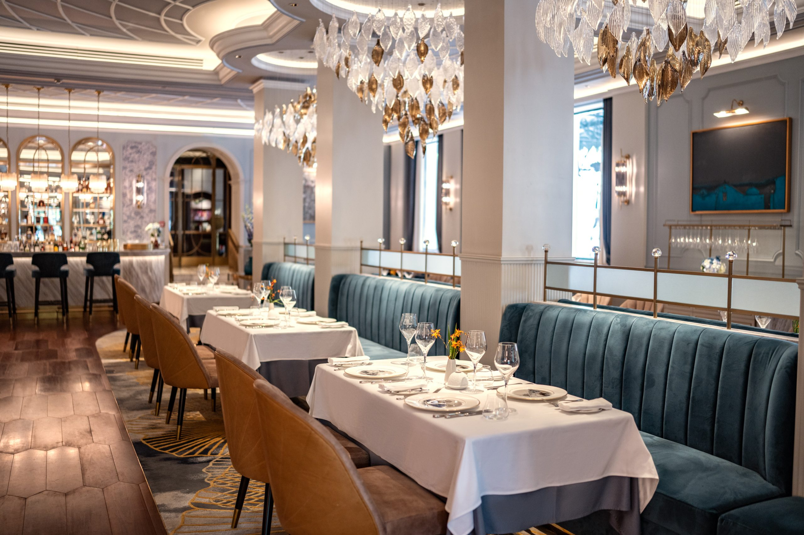
LOCATIONHanoi
ACTIVITIES Savor a final leisurely breakfast at Amantaka, reflecting on the serene beauty and spiritual depth of Luang Prabang. Depending on your flight schedule, you may have time to revisit a favorite spot for a last memory or enjoy a final contemplative stroll. Your private transfer will then take you to Luang Prabang International Airport (LPQ) for your luxury flight to Hanoi's Noi Bai International Airport (HAN), Vietnam. Upon arrival, you will be warmly met and escorted to the iconic Sofitel Legend Metropole Hanoi, your colonial masterpiece in the heart of the city. Settle into your elegant surroundings. Enjoy dinner at the hotel's acclaimed French restaurant Le Beaulieu, or venture out to explore Hanoi's sophisticated gourmet dining scene.
ACCOMMODATION Sofitel Legend Metropole


LOCATIONHanoi
ACTIVITIES Today, embark on a private guided tour of Hanoi, delving into its rich history, French colonial architecture, and vibrant local life. Begin your exploration of the captivating Old Quarter, navigating its labyrinthine streets, each traditionally dedicated to a specific craft, perhaps enjoying a charming cyclo (rickshaw) ride. Visit the Temple of Literature, Vietnam's first national university, a serene oasis of historical scholarship. Pay your respects at the Ho Chi Minh Mausoleum complex (exterior views to observe the architecture) and the nearby elegant One Pillar Pagoda. Enjoy an authentic Vietnamese lunch at a renowned local restaurant. In the late afternoon, immerse yourself in a unique Vietnamese art form with a traditional Water Puppet Theatre performance, where puppets dance on water to live traditional music, telling folk tales and legends.
ACCOMMODATION Sofitel Legend Metroplole
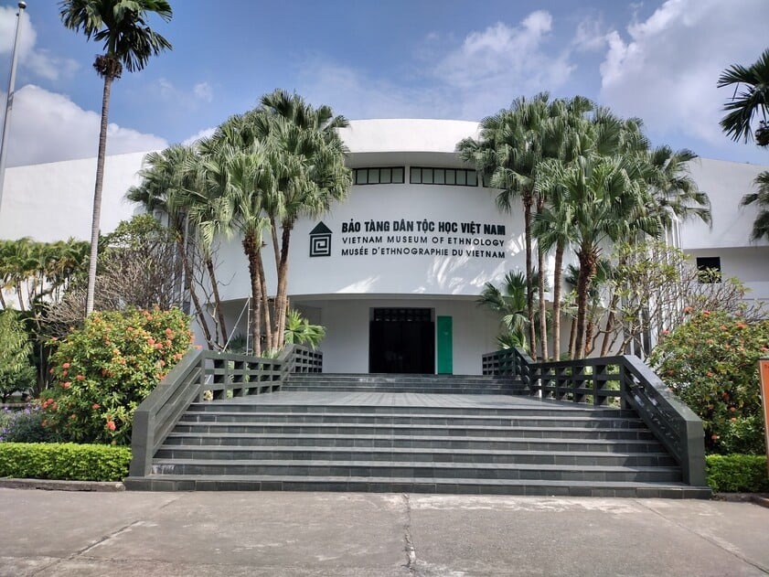

LOCATIONHue
ACTIVITIESThis morning offers a chance to delve deeper into Hanoi's hidden corners with your guide. You might visit a bustling local market to observe daily life, explore a specialized craft street, or visit the Ethnology Museum for fascinating insights into Vietnam's diverse ethnic cultures. After lunch, your private transfer will take you to Noi Bai International Airport (HAN) for your domestic luxury flight to Hue's Phu Bai International Airport (HUI). Upon arrival, transfer to the elegant Azerai La Residence Hue, an Art Deco masterpiece perfectly situated by the serene Perfume River. Settle in and enjoy dinner at the hotel's restaurant or a local establishment specializing in Hue's unique imperial cuisine.
ACCOMMODATION Azerai La Residence

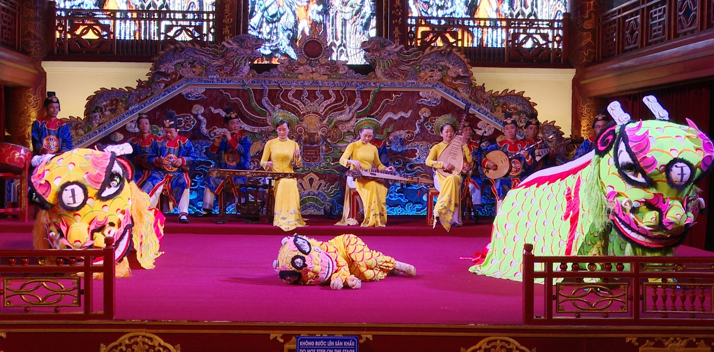
LOCATIONHue
ACTIVITIES Discover the imperial grandeur of Hue, a UNESCO World Heritage Site. Your private guide will lead you through the magnificent Imperial City (Citadel), including the Forbidden Purple City, royal temples, and palaces. Enjoy a royal-inspired lunch. In the afternoon, take a serene dragon boat cruise on the Perfume River to visit the iconic Thien Mu Pagoda, followed by visits to one or two elaborate Royal Tombs (e.g., Minh Mang, Khai Dinh), showcasing unique architectural styles. For dinner, experience the exquisite flavors of traditional royal Hue cuisine in a charming setting at Ancient Hue Restaurant, possibly complemented by cultural performances.
ACCOMMODATION Azerai La Residence
.jpg)
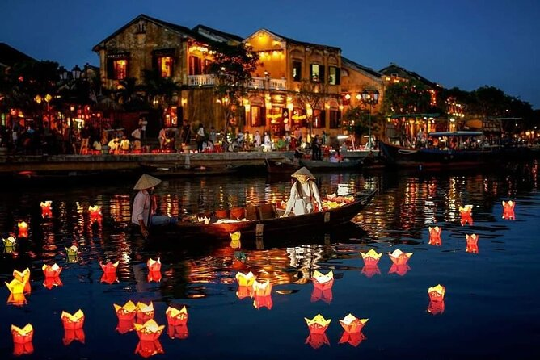
LOCATIONHoi an
ACTIVITIES After a leisurely breakfast at Azerai La Residence Hue, embark on a breathtaking private luxury car journey south to Hoi An. This scenic drive takes you along the stunning coastline, ascending the renowned Hai Van Pass (Cloud Pass), offering spectacular panoramic views of the mountains meeting the sea. Make stops at picturesque viewpoints like Lang Co Beach and the serene Lap An Lagoon for memorable photo opportunities. Upon arrival in Hoi An, check into Anantara Hoi An Resort, a charming property ideally located on the Thu Bon River. In the afternoon, enjoy a relaxed walking tour of Hoi An's UNESCO Ancient Town, a remarkably well-preserved trading port. Admire its unique blend of Vietnamese, Chinese, and Japanese architectural influences, wander through lantern-lined streets, and explore historic merchant houses.
ACCOMMODATION Anantara Hoi An
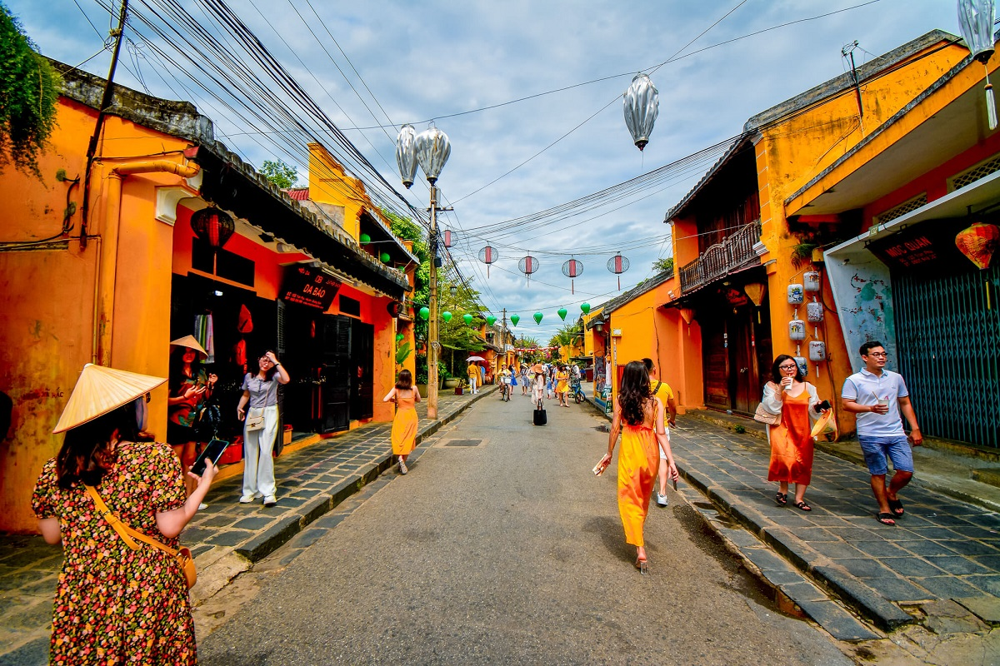
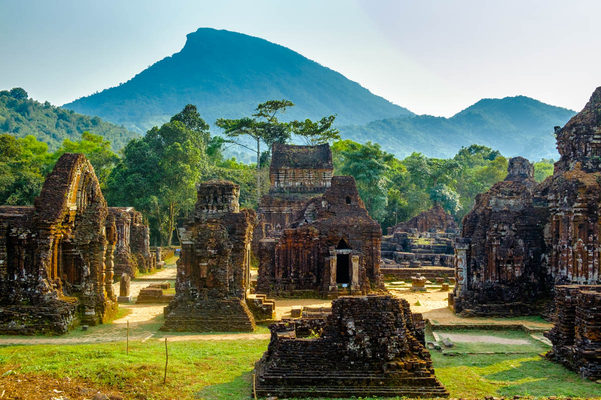
LOCATIONHoi An
ACTIVITIES This morning, visit the nearby My Son Sanctuary, another UNESCO World Heritage Site featuring the ruins of ancient Cham temples, with your private guide. Return to Hoi An for lunch. In the afternoon, immerse yourselves in Hoi An's vibrant artisan scene. Consider participating in a private lantern-making workshop, learning the delicate art of crafting these iconic symbols of Hoi An, or visit a renowned local tailor for a bespoke clothing experience, a hallmark of the town. The evening is free to explore Hoi An's magical illuminated streets. For dinner, savor authentic Vietnamese cuisine and a lively atmosphere at the renowned Morning Glory Signature, located in the heart of Hoi An Ancient Town.
ACCOMMODATION Anantara Hoi An

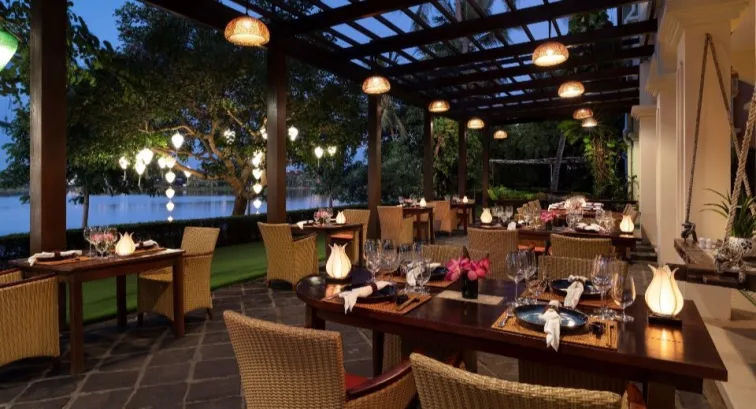
LOCATIONHoi an
ACTIVITIESDelve into Vietnam's renowned culinary heritage with a private Vietnamese cooking class this morning. Start with a visit to a bustling local market to select fresh ingredients, then learn to prepare traditional dishes. Enjoy your creations for lunch. The afternoon is at your leisure for well-deserved relaxation; perhaps enjoying a rejuvenating spa treatment at Anantara Spa, a swim in the pool, or simply soaking in the atmosphere of Hoi An from your resort. For dinner, enjoy a delightful and refined meal at The Spice House, located within your hotel, Anantara Hoi An Resort, offering a superb blend of Vietnamese and international cuisine.
ACCOMMODATION Anantara Hoi An


LOCATIONHo Chi Minh
ACTIVITIESAfter a leisurely breakfast, your private transfer will take you to Da Nang International Airport (DAD) for your luxury domestic flight to Ho Chi Minh City (SGN). Upon arrival, you'll be met and transferred to Park Hyatt Saigon. In the afternoon, embark on a private city tour focusing on HCMC's vibrant history and French colonial architecture. Visit the Reunification Palace, the historic Notre Dame Cathedral, and the iconic Central Post Office. For a sophisticated dinner, enjoy the acclaimed cuisine at Square One, located within your hotel, Park Hyatt Saigon, offering a superb blend of Vietnamese and Western dishes in an elegant setting.
ACCOMMODATION Park Hyatt Saigon
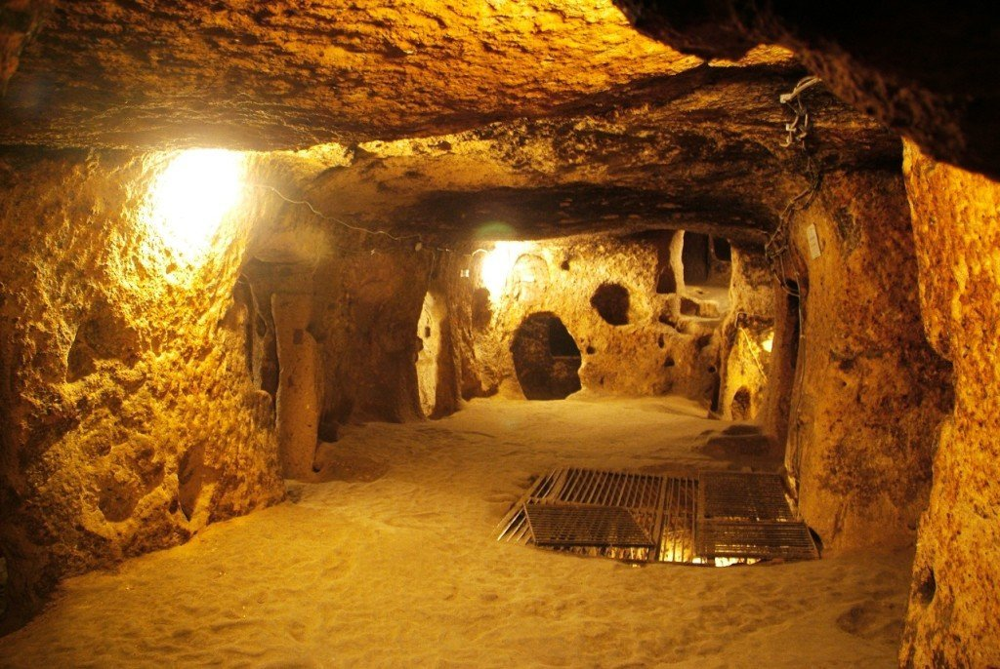
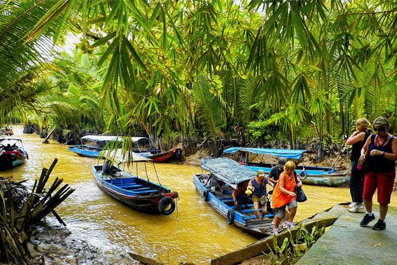
LOCATIONHo Chi Minh
ACTIVITIESThis morning, embark on an insightful private excursion to the Cu Chi Tunnels, an intricate underground network used extensively during the Vietnam War. This unique site offers a profound glimpse into the resourcefulness and resilience of the Vietnamese people. Return to Ho Chi Minh City for lunch. In the afternoon, enjoy a taste of authentic Mekong Delta life with a private tour to Ben Tre. Experience leisurely boat rides through lush coconut groves, and gain fascinating insights into local cottage industries, such as the production of coconut candy. Return to Park Hyatt Saigon in the evening, reflecting on the day's historical and cultural explorations. For dinner, savor authentic Vietnamese dishes in a charming rooftop setting at Secret Garden Restaurant, offering a delightful local ambiance.
ACCOMMODATION Park Hyatt Saigon

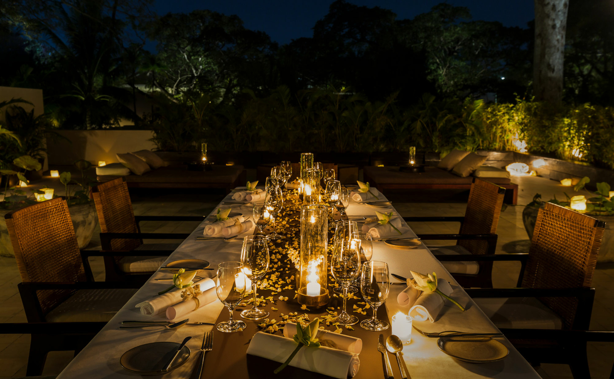
LOCATIONSiem Reap
ACTIVITIES Enjoy a final leisurely breakfast at Park Hyatt Saigon. Depending on your international flight schedule, you may have time for some last-minute exploration or relaxation in the city. Your private transfer will then take you to Tan Son Nhat International Airport (SGN) for your luxury flight to Siem Reap Angkor International Airport (SAI), Cambodia. Upon arrival, you will be warmly welcomed and transferred to the magnificent Amansara, an ultra-exclusive retreat ideally located near the temples. Settle into your serene pavilion and prepare for the awe-inspiring wonders of Angkor. Dinner will be an exquisite experience at Amansara's Dining Room.
ACCOMMODATION Amansara


LOCATIONSiem Reap
ACTIVITIES Embark on a full-day private, expert-guided exploration of the awe-inspiring Angkor Archaeological Park, a UNESCO World Heritage Site and the spiritual heart of Cambodia. You may choose an optional sunrise experience at Angkor Wat, a truly magical moment. Begin with the iconic Angkor Wat, the largest religious monument in the world, marveling at its architectural grandeur and intricate bas-reliefs. Continue to Angkor Thom, including the captivating Bayon Temple with its enigmatic giant smiling faces, and the Terrace of the Elephants. Enjoy a gourmet picnic lunch within the park, carefully arranged by Amansara, or at a curated local restaurant. In the afternoon, explore the atmospheric Ta Prohm (Tomb Raider Temple), famous for the colossal tree roots that intertwine with the ancient stones, creating a mystical "jungle temple" feel.
ACCOMMODATION Amansara
.jpg)

LOCATIONSiem Reap
ACTIVITIES This morning, take a private drive through the Cambodian countryside to the exquisite Banteay Srei Temple, a smaller 10th-century Hindu temple renowned for its incredibly intricate and well-preserved pink sandstone carvings, often considered the jewel of Khmer art. Explore the charming rural landscapes en route. Return to Siem Reap for lunch. In the afternoon, gain insights into contemporary Khmer craftsmanship with a visit to Artisans Angkor, where you can observe skilled artisans working on stone, wood, and silk, preserving traditional techniques and supporting local communities. In the evening, enjoy a special farewell dinner with a graceful Apsara Dance performance, immersing yourselves in the elegant movements and storytelling of this traditional Khmer cultural artistry.
ACCOMMODATION Amansara


LOCATIONPhnom Penh
ACTIVITIES Enjoy a final leisurely breakfast at Amansara, taking in the tranquility of your surroundings. Your private transfer will then take you to Siem Reap Angkor International Airport (SAI) for your short domestic luxury flight to Techo International Airport (KTI), Cambodia's vibrant capital. Upon arrival, you will be warmly welcomed and transferred to the elegant Rosewood Phnom Penh. The remainder of the afternoon is specifically dedicated to your rest and relaxation at this magnificent hotel. Unwind in your luxurious room, perhaps enjoy the hotel's facilities, or simply take in the city views from above. For dinner, savor an exquisite meal at Brasserie Louis within Rosewood Phnom Penh, offering a blend of French and Cambodian flavors in a sophisticated setting.
ACCOMMODATION Rosewood Phnom Penh


LOCATIONPhnom Penh
ACTIVITIESToday, embark on a private guided tour to discover the grandeur of Phnom Penh. Begin with a visit to the Royal Palace, a stunning example of Khmer architecture, home to the Royal Family, and explore its beautiful grounds. Adjacent to the Palace, step into the revered Silver Pagoda, named for its floor made of 5,000 silver tiles, and admire its impressive collection of Buddha statues. Continue to the National Museum, which houses an outstanding collection of Khmer art, including archaeological and religious artifacts from various periods, providing rich context to Cambodia's history. In the afternoon, visit Wat Phnom, a significant Buddhist temple situated on a small hill, which gives the city its name and offers panoramic views. For dinner, enjoy refined Khmer cuisine and a delightful ambiance at Malis Cambodian Restaurant, known for its "Living Cambodian Cuisine" concept.
ACCOMMODATION Rosewood Phnom penh


LOCATIONPhnom Penh
ACTIVITIES This morning offers a profound and essential, though somber, understanding of Cambodia's recent history. With your private guide, visit the Tuol Sleng Genocide Museum (S-21 Prison), a former high school tragically converted into a security prison during the Khmer Rouge regime, followed by a visit to the Choeung Ek Genocidal Center (Killing Fields). These sites offer a powerful and crucial historical context to Cambodia's resilience and are optional based on your comfort level. After these reflective visits, enjoy a quiet lunch. In the afternoon, immerse yourself in local culture with a private excursion to Koh Dach (Silk Island). A short ferry ride brings you to this serene island where you can observe traditional silk weaving practices and local village life. Alternatively, enjoy a relaxing sunset cruise on the Mekong River, offering a beautiful perspective of Phnom Penh's riverside landmarks as dusk settles. For your farewell dinner in Cambodia, experience the modern, art-inspired atmosphere and delicious cuisine at ROMDENG, a vocational training restaurant offering high-quality Cambodian dishes while supporting a good cause.
ACCOMMODATION Rosewood Phnom Penh


LOCATIONPhnom Penh
ACTIVITIES Enjoy a leisurely breakfast at Rosewood Phnom Penh, savoring your final moments in Cambodia's capital. Depending on your international flight schedule, you may have time for some last-minute souvenir shopping at the Central Market or the Russian Market (Psar Tuol Tom Pong), known for its handicrafts and unique finds. Your private luxury transfer will then take you to Techo International Airport (KTI) for your onward international flight, concluding your comprehensive and deeply enriching 24-day "Culture & Heritage" journey through Southeast Asia.
ACCOMMODATION N/A (Departure)